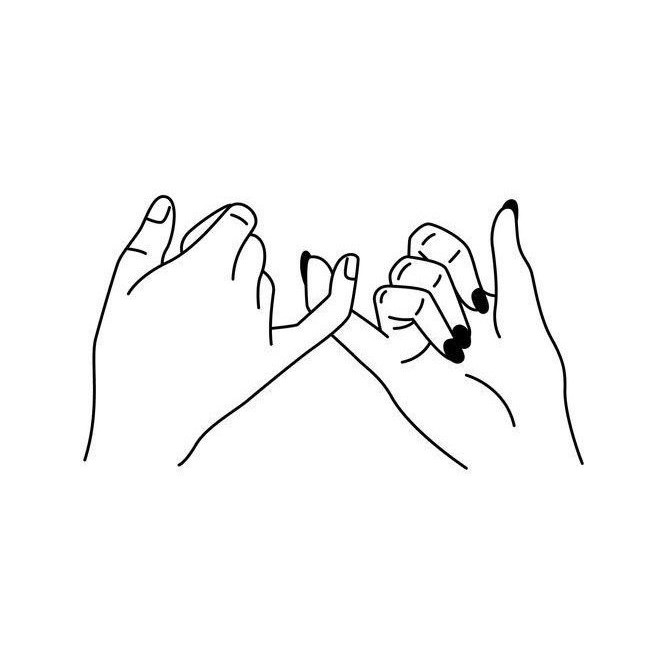
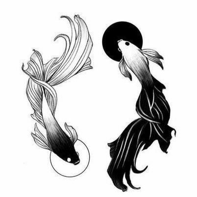

Anasayfa
Dövmeler
İletişim
Randevu
ÇİFT DÖVMELERİ
Çift dövmeleri, iki kişi arasındaki özel bağı simgeler. Tasarımlar genellikle birbirini tamamlayan semboller, harfler veya desenler içerir, bu da ilişkinin eşsizliğini vurgular. Bu tarzın bazı örnekleri:
Fate
Moon and Sun
Fire and Water
Joystick
FingerPrint Heart
Fire and Water Colored
Lock and Key
Hello Darling
Lovers Cats
Fate2
Sally and Jack

Fate3
Heart Fate

Ying Yang Fish
Lovers Skeleton
Moon and Sun Fox